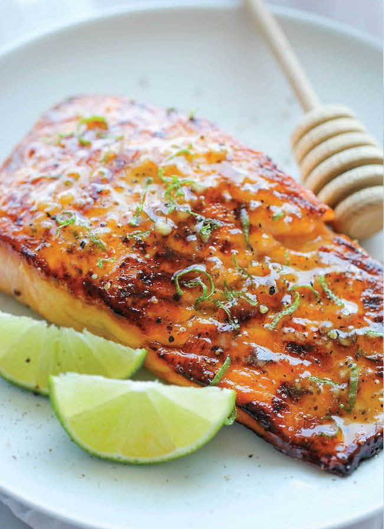

Honey Garlic Salmon
Return to Homepage

So What is This?
This dish is a celebration of bold flavors and effortless elegance.
The sticky, caramelized glaze locks in moisture, ensuring each bite is tender
and bursting with umami flavor (whatever that means). Ready in about 20 minutes,
it's perfect for busy weeknights or a special dinner. Serve over steamed rice or
with roasted vegetables for a meal that's as nourishing as it is delicious.
Prep Time: 10 minutes
Cook Time: 12 minutes
Total Time: 22 minutes
Ingredients
- 4 salmon fillets
- 1 1/4 teaspoons salt
- 1 tablespoon lemon juice, freshly squeezed recommended but you do what you gotta do
- 1/4 cups honey
- 2 tablespoons soy sauce (or tamari)
- 1 tablespoon olive oil
- 4 garlic cloves, minced
- scallions, for garnish
Instructions
- Pat salmon fillets dry with paper towels. Season with 3/4 teaspoons of salt.
- Wish 1 tablespoon of lemon juice, 1/4 ups of honey, 2 tablespoons of soy sauce, and the remaining 1/2
teaspoon of salt in a small bowl until honey is dissolved.
- Heat olive oil in a large skillet over medium heat until shimmering. Place salmon skin-side up on the
skillet, press down on the salmon with a flat spatula so there's a lot of contact with the pan to
brown evenly. Do not move the fish. Only press down on it occasionaly, until the bottom is golden-brown.
This will take about 5 minutes.
- Flip the salmon and cook for 2 more minutes. Add minced garlic and cook until fragrant but not browned,
about 15 seconds. The garlic burns fast if the pieces are spread around the pan. Pour the sauce over
the salmon. Cook, spooning some of the sauce over the salmon as it cooks, until the souce is thickened
and reduced by about half, and the salmon is just cooked through, 3 to 4 minutes. Garnish with thinly
sliced scallions if you want.
Nutrition Info
Show
Calories: 464
Fat: 26.3g
Saturated: 5.7g
Carbs: 20.7g
Fiber: 0.7g
Sugars: 18g
Protein: 36g
Sodium: 544.4mg
Return to Homepage